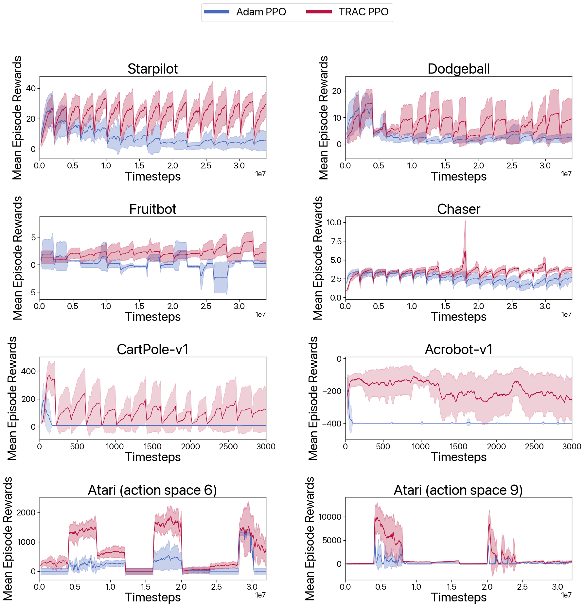

ArXiv
Experiments
Colab
Pypi
|
|
|
|
|
|
|
|
ArXiv |
Experiments |
Colab |
Pypi |
A key challenge in lifelong reinforcement learning (RL) is the loss of plasticity, where previous learning progress hinders an agent's adaptation to new tasks. While regularization and resetting can help, they require precise hyperparameter selection at the outset and environment-dependent adjustments. Building on the principled theory of online convex optimization, we present a parameter-free optimizer for lifelong RL, called TRAC, which requires no tuning or prior knowledge about the distribution shifts. Extensive experiments on Procgen, Atari, and Gym Control environments show that TRAC works surprisingly well—mitigating loss of plasticity and rapidly adapting to challenging distribution shifts—despite the underlying optimization problem being nonconvex and nonstationary.
In lifelong RL, a learning agent must continually acquire new knowledge to handle the nonstationarity of the environment. At first glance, there appears to be an obvious solution: given a policy gradient oracle, the agent could just keep running gradient descent nonstop. However, recent experiments have demonstrated an intriguing behavior called loss of plasticity [1,2,3,4]: despite persistent gradient steps, such an agent can gradually lose its responsiveness to incoming observations.
TRAC combines three parameter-free Online Convex Optimization (OCO) techniques: direction-magnitude decomposition, additive aggregation, and the \(\text{erfi}\) potential function. The algorithm starts with a base optimizer, \(\text{Base}\), and adjusts a scaling parameter, \( S_{t+1} \), in an online data-dependent manner. This parameter affects the update of \(\theta_{t+1}\) as shown:
\[ \theta_{t+1} = S_{t+1} \cdot \theta_{t+1}^\text{base} + (1 - S_{t+1}) \theta_\text{ref}. \]The decision rule for the tuner uses the \(\text{erfi}\) function to calculate \( s_{t+1} \) as follows:
\[ s_{t+1} = \frac{\epsilon}{(\text{erfi})(1/\sqrt{2})} (\text{erfi})\left(\frac{\sigma_t}{\sqrt{2v_t} + \epsilon}\right), \]
This rule applies the \(\text{erfi}\) function, an imaginary error function, to tune the scaling parameter based on the input \(\sigma_t\) and the running variance \(v_t\). Aggregating the outputs of tuners with different discount factors allows TRAC to adaptively scale based on algorithm performance without manual tuning.


pip install trac-optimizer
from torch.optim import Adam
# original code
optimizer = Adam(model.parameters(), lr=0.01)
# your typical optimizer methods
optimizer.zero_grad()
optimizer.step()
from trac_optimizer import start_trac
# with TRAC
optimizer = start_trac(log_file='logs/trac.text', Adam)(model.parameters(), lr=0.01)
# using your optimizer methods exactly as you did before (feel free to use others as well)
optimizer.zero_grad()
optimizer.step()
We thank Ashok Cutkosky for insightful discussions on online optimization in nonstationary settings. We are grateful to David Abel for his thoughtful insights on loss of plasticity in relation to lifelong reinforcement learning. We appreciate Kaiqing Zhang and Yang Hu for their comments on theoretical and nonstationary RL. This project is partially funded by Harvard University Dean's Competitive Fund for Promising Scholarship.
 Pypi
Pypi